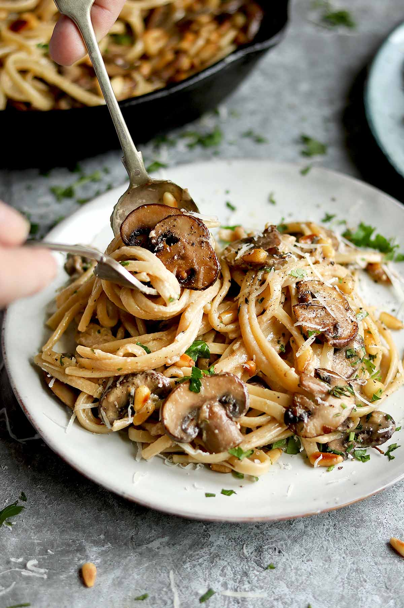

Creamy (and addicting!) Mushroom Pasta
A very yummy creamy pasta that is easy to make and easy to eat!
Ingredients
- Garlic (Minced!)
- Pasta (any kind will do! Personally I like the bowties)
- Onion
- Mushrooms
- Heavy cream
- Garlic powder
- Protein of your choice (sausage, chicken, etc.)
The Step-by-Step
- Heat a frying pan on medium heat and add oil
- Add minced garlic
- When fragrant add onion and mushroom
- Once the onions are lightly brown, add protein if you like
- Cook pasta on the side, don't forget to add salt!
- Mix in 1 cup of heavy cream and 1 teaspoon of garlic powder
- Season, season, season!
- Once everything is saucy, add the strained pasta
- Garnish with cheese/parsley
- Bon Appetit!
Return Home